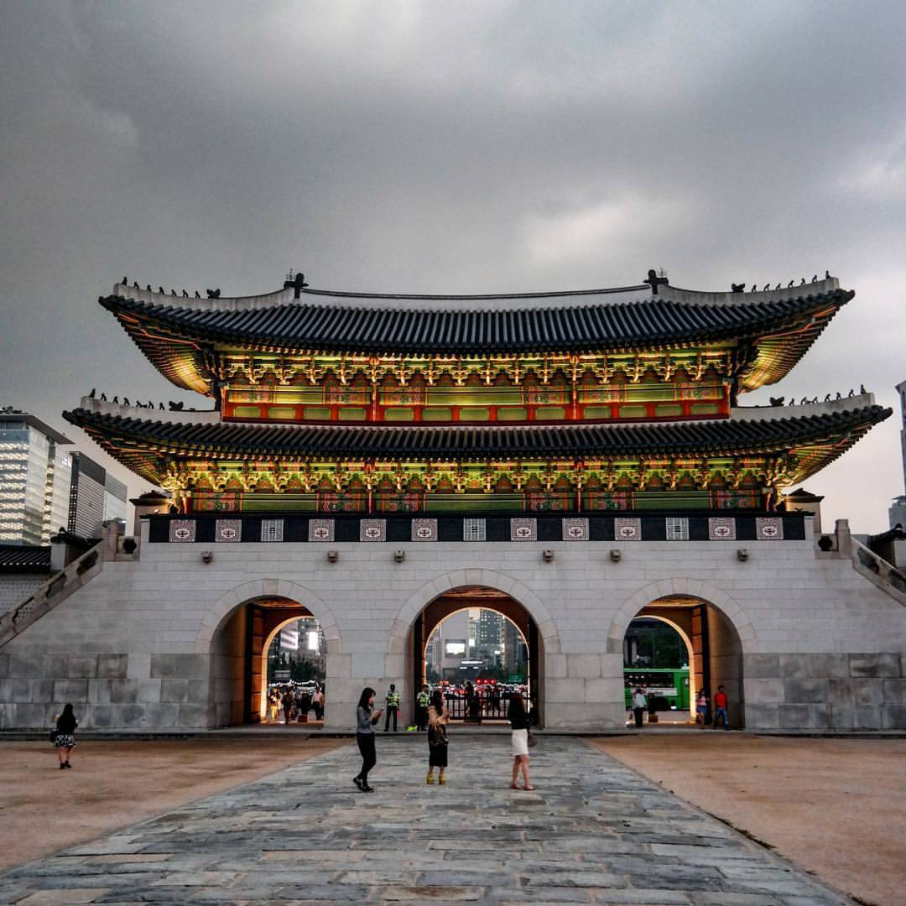

광화문
이란?
경복궁
의 남쪽에 있는 정문이다. ‘임금의 큰 덕(德)이 온
나라
를 비춘다’는 의미이다.
광화문과 궁궐 담장
궁궐의 바깥 경계에 높은 담장을 쌓았고, 담장의 동서남북 네 곳에 대문을 만들었다. 건춘문(建春門-동), 광화문(光化門-남), 영추문(迎秋門-서), 신무문(神武門-북)은 각각 봄-여름-가을-겨울과 나무-불-쇠-물 등을 상징하는 명칭으로 ① 전통적인 오행설에서 유래했다. ② 1968년 재건된 광화문은 콘크리드 구조로 만들었고, 위치도 원위치에서 뒤로 물러서 있었는데, 2010년 원래의 위치에 제 모습으로 복원됐다. 담장의 동남쪽과 서남쪽 모퉁이에 동십자각과 서십자각을 세워 망루로 사용했는데, ③ 서십자각은 일제강점기에 철거됐고, 동십자각은 도로 확장으로 인해 담장을 안쪽으로 옮겨 쌓으면서 길 한가운데 나앉게 됐다.
① 전통적인 오행설
오행은 방향(동·서·남·북·중앙)과 계절(봄·여름·가을·겨울·환절기), 물질(나무·쇠·불·물·흙), 색깔(청·백·적·흑·황), 동물(청룡·백호·주작·현무·황룡)등으로 나타낼 수 있다.
② 1968년 재건된 광화문
한국전쟁 때 폭탄에 맞아 부서진 걸 18년만에 복원하였다.
① 서십자각
은 일제 강점기에 철거 일제가 전찻길을 내면 서십자각을 없애버렸다.